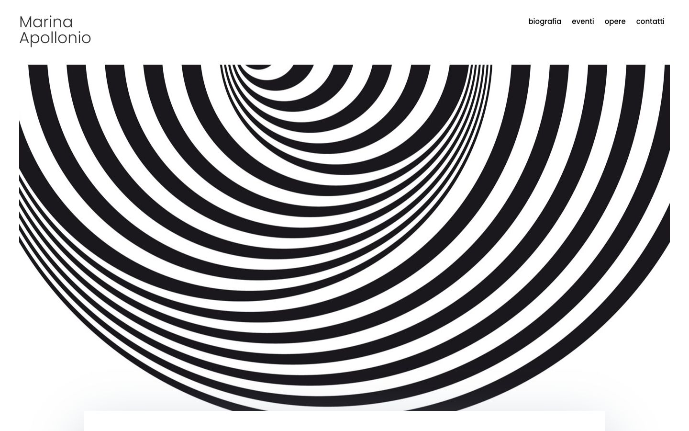

References / Website / 244
Marina Apollonio website
The artist’s own site opens on a black and white field of concentric rings that tighten into one side, under a plain sans-serif name and menu.
- Source
- marinaapollonio.com
- Creator
- Marina Apollonio
- Style
- Op art (agent-proposed, not yet reviewed by a person)
- Moods
- Vibrating, calm, high-contrast
- Evidence
- Captured with
tools/capture.mjs(headless Chrome, 1440 × 900) on 28 September 2026 and inspected. The screenshot shows the first viewport; the measurement covers up to four screens. Nothing covers the page. - Reviewed
- Rights
- Third-party work, stored with credit for commentary. License: unverified. Rights policy
Context
The site describes Apollonio as an Italian artist of the optical and kinetic movement (page title: “Artista Italiana del movimento Ottico/Cinetico”). The Peggy Guggenheim Collection held a retrospective, Marina Apollonio: Beyond the Circle, from October 2024 to March 2025. Peggy Guggenheim Collection.
Observed
- “Marina Apollonio” sits at the top left in a light, dark-grey geometric sans-serif on two lines. The menu at the right (biografia, eventi, opere, contatti) uses the same face in black.
- Below, a panel almost the full width of the page shows a large half-disc of concentric black and white rings of equal width.
- The centre of the rings is off to the upper middle, so the rings crowd together on one side and spread out on the other, and the disc seems to tilt in depth.
- A white panel with a soft grey shadow starts at the bottom edge of the viewport.
Why it belongs
The page shows the simplest web form of the style: an artwork reproduction used as a hero field, with the interface reduced to a small neutral sans-serif.
The fingerprint misses most of this. The rings are an image, so the pattern metrics read 0; the body text is #666 grey, so the text contrast is 5.7; and the soft shadow under the next panel gives a shadow share of 0.55. The screenshot palette gives lightness 0.69 and no hues.
Borrow
Offset the centre of a set of concentric rings so that they crowd on one side and suggest a tilt.
Keep the name and menu small and plain above the field, so the pattern carries the page.
Measured
Machine-extracted by tools/extract-traits.js on . Full measurement.
- Type families
- Poppins (100%)
- Type scale ratio
- 1.15
- Median radius
- 0 px
- Mean chroma
- 0.03
- Palette
- #ffffff 68%
- #666666 23%
- #e02b20 4%
- #333333 3%
- #000000 1%
- #f4f4f4 1%
- #946ef4 0%
- #8857f2 0%

